Perobal, Paraná
Sua festa inteira sai da minha cozinha.
Bolos decorados, doces e salgados em Perobal. Você diz quantas pessoas. Eu monto o resto.
Duas coisas, do mesmo lugar.
O bolo que todo mundo fotografa e a mesa que ninguém quer montar sozinho. Sai tudo da mesma cozinha, para o mesmo dia.
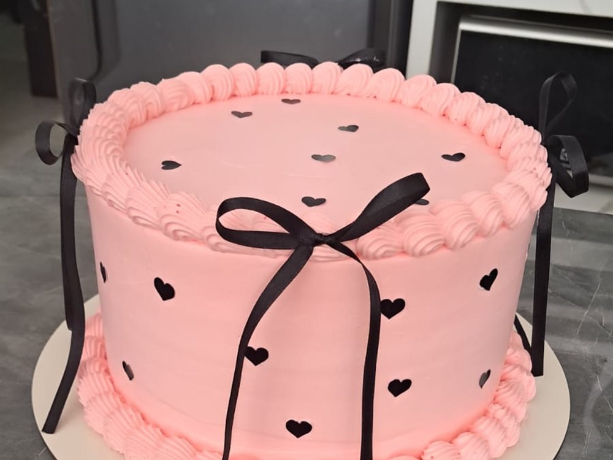
Bolos decorados
Do jeito que você mandou a foto. Tema, cor, andar, número em cima.
A partir de R$ 75 o quilo
Ver como funciona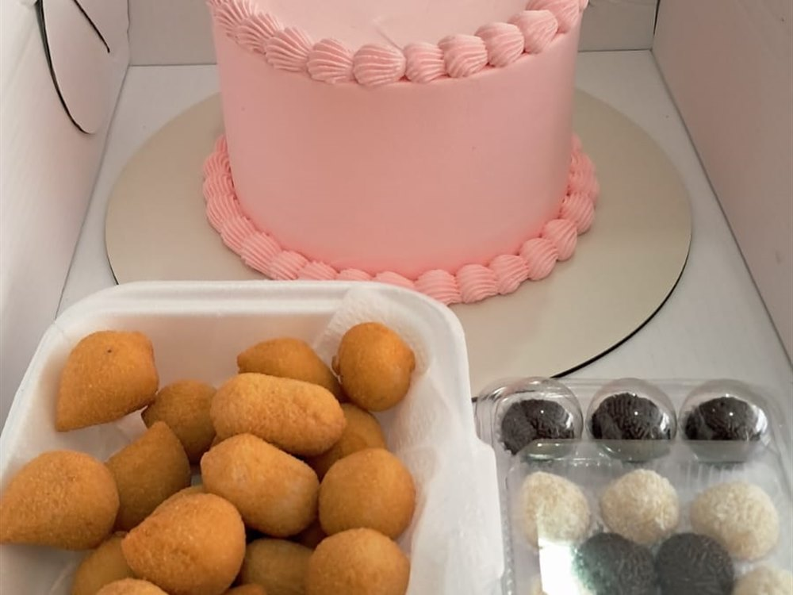
Kit festas
Salgado, doce e bolo. Tudo no mesmo dia, na quantidade certa.
R$ 75 o cento de salgado · R$ 120 o de doce
Calcular a minhaAlguns que já saíram daqui
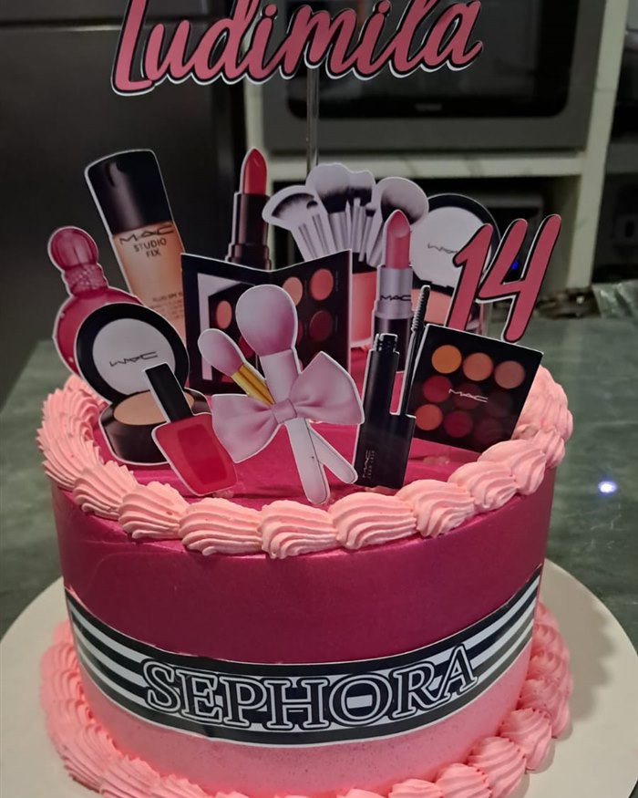
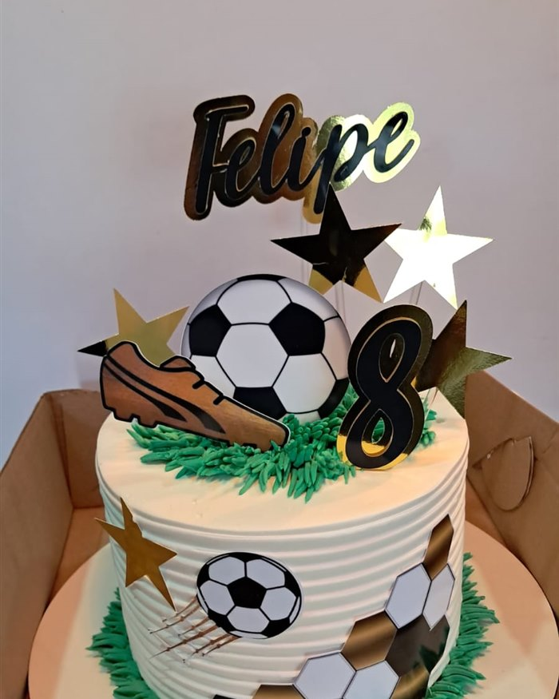
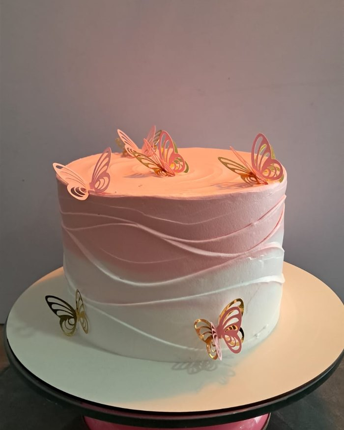
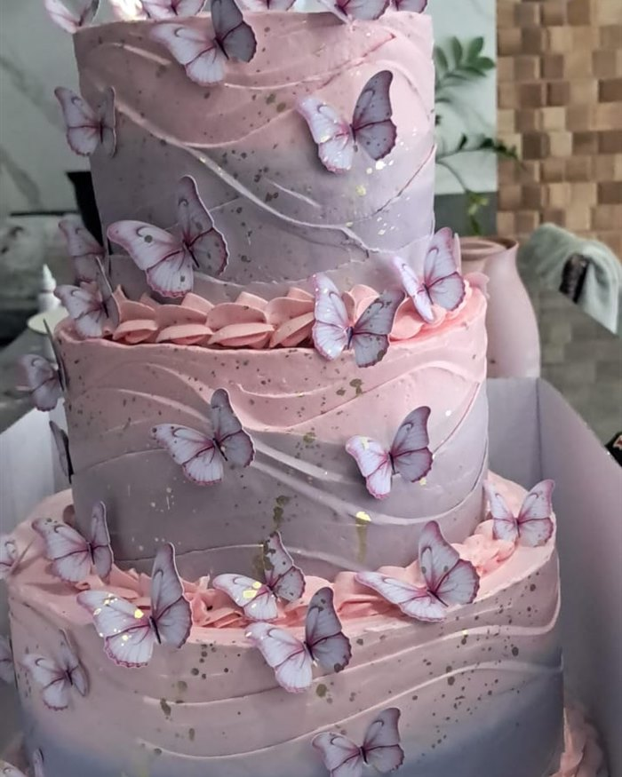
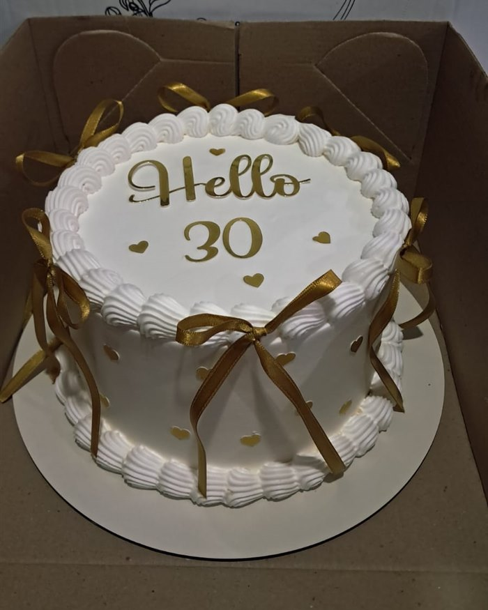
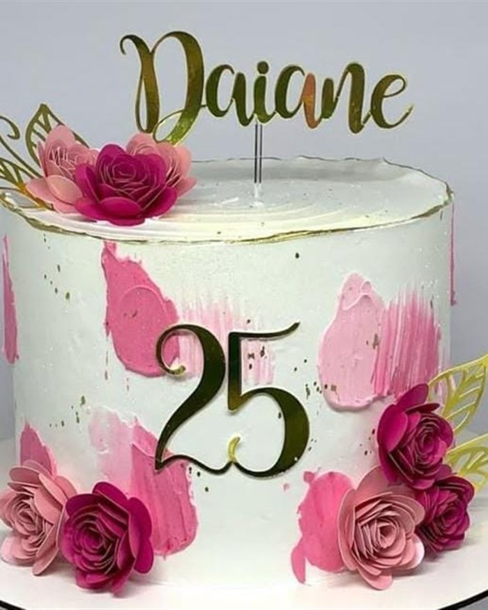
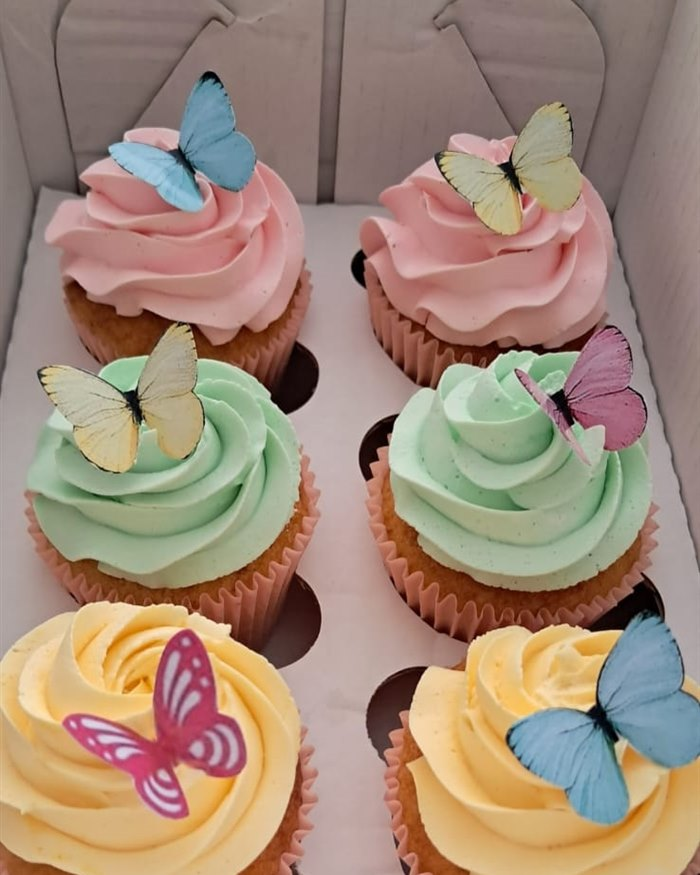
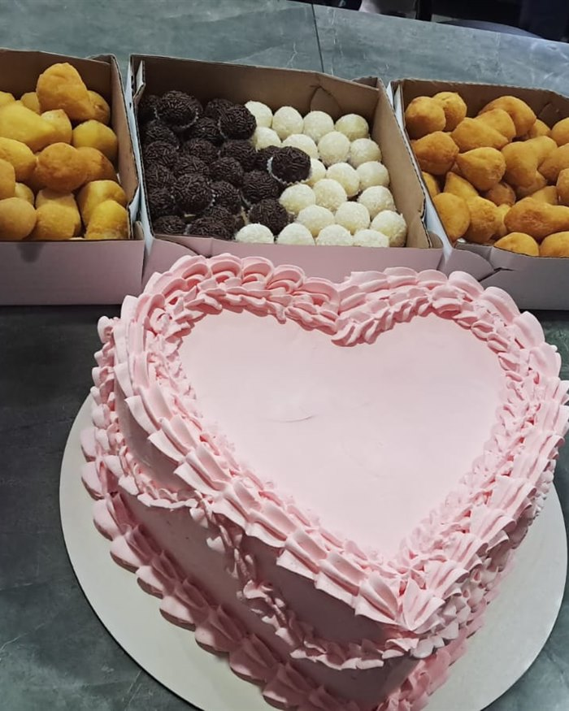
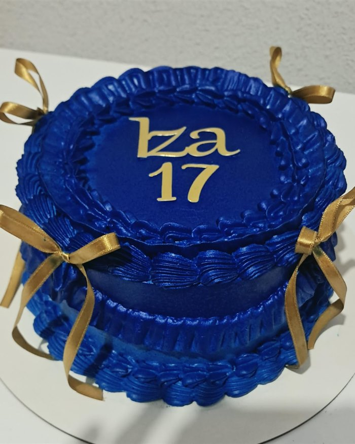
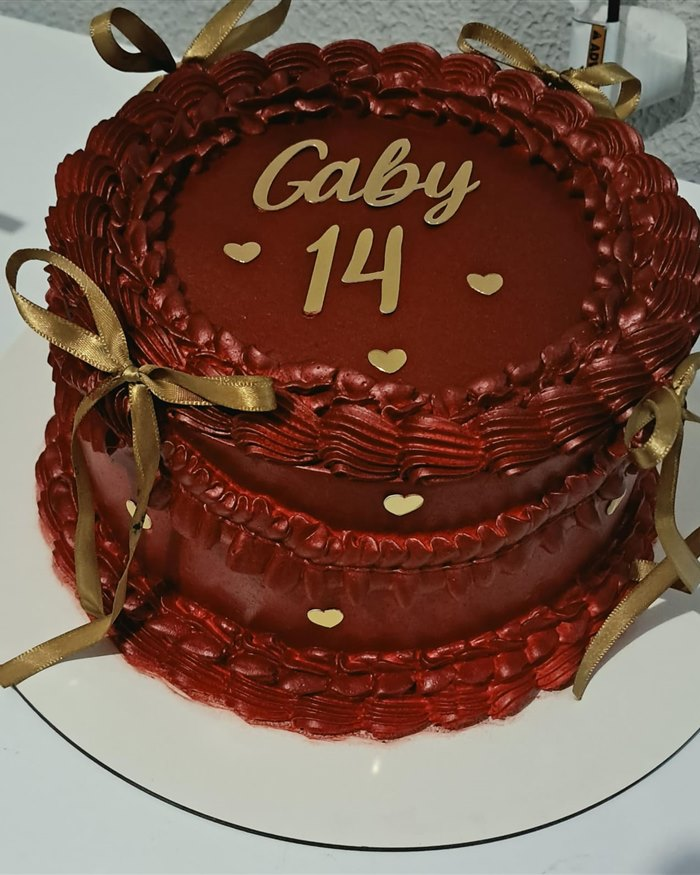
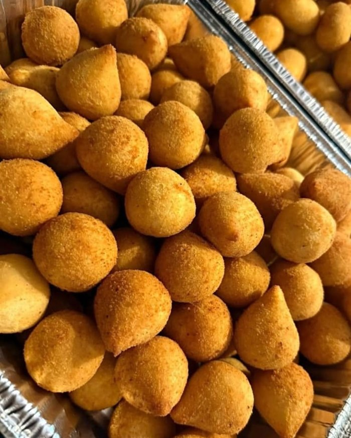
Tema personalizado
Você manda, a gente faz.
Bolo com tema de personagem, de time, ou com a foto de quem faz aniversário. Você manda a imagem no WhatsApp e eu monto o bolo em cima dela.
Três passos, e acabou.
Sem formulário, sem cadastro, sem esperar e-mail. A conversa inteira acontece no WhatsApp.
Passo um
Você manda a ideia
Uma foto, um tema, ou só a data. O que você tiver já serve para começar.
Passo dois
A gente fecha os detalhes
Sabor, tamanho, quantidade e o horário da entrega.
Passo três
Chega pronto no dia
Você retira ou recebe, montado e no ponto.
Quantas pessoas na sua festa?
Arraste, escolha o que entra, e veja o que a sua festa precisa. As contas são as mesmas que eu uso aqui.
Cada ponto é um convidado. Ligue e desligue o que você quer ao lado.
Este número é só uma estimativa e o valor real pode mudar. O recheio, a decoração e o tema do bolo mexem no preço. O orçamento fechado sai na nossa conversa, e o botão abaixo manda só o seu pedido, sem valor.
Mandar essa festa no WhatsAppOs preços, sem enrolação.
São estas as contas, sem letra miúda. No bolo, o recheio e a decoração ainda podem mexer no valor final.
Bolo decorado
Um quilo serve cerca de dez pessoas. O recheio e a decoração mexem no valor.
a partir de75reais o quilo
Salgados
Fritos e assados, na mistura que a sua festa pedir. Cinco por convidado dá conta.
75reais o cento
Doces
Brigadeiro, beijinho e os sabores que você combinar comigo.
120reais o cento
Encomenda fechada no WhatsApp, com a data reservada na hora.
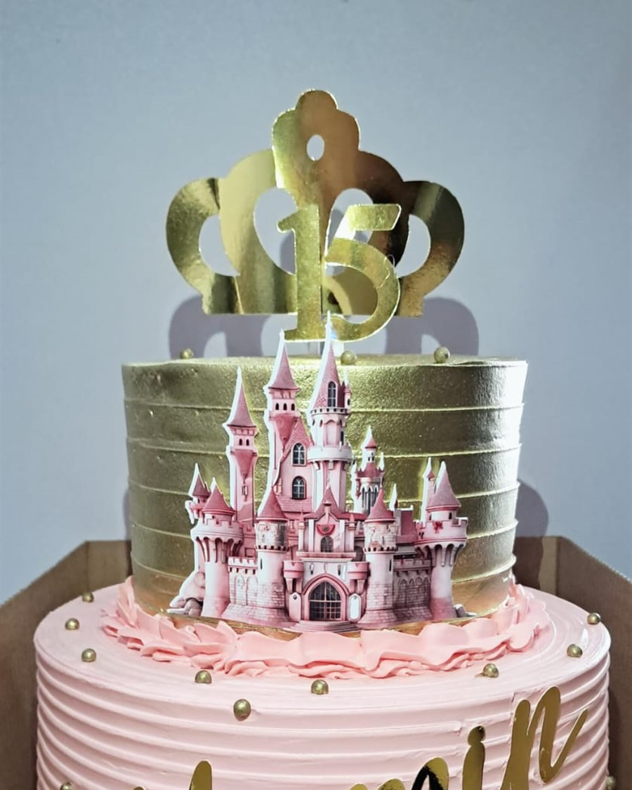
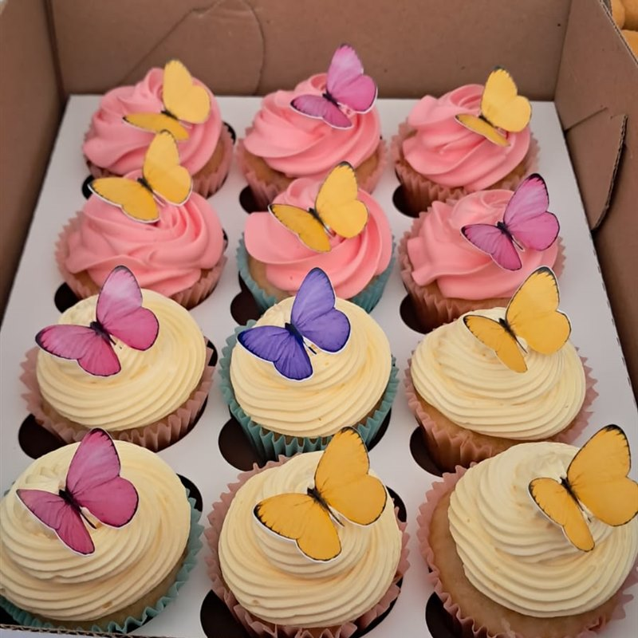
O que todo mundo pergunta antes.
Sim. Eu faço cada bolo aqui, do começo ao fim, e o que a gente combinar é o que chega na sua festa. Você me manda a foto ou a ideia, a gente fecha tema, cor e tamanho no WhatsApp, e é isso que eu faço.
Alguns dias já resolvem, e semanas antes é melhor ainda, principalmente para fim de semana e data comemorativa. O que não dá é encomendar para o mesmo dia.
Em Perobal eu entrego. Para as outras cidades da região a gente combina a entrega no WhatsApp.
A gente combina na conversa, porque depende de onde você está. Em Perobal é uma coisa, nas cidades vizinhas é outra.
Eu mando a lista completa de recheios no WhatsApp, com os preços atualizados. Assim você escolhe vendo tudo, e o valor é sempre o de hoje.